背景
你有没有发现跟大模型对话，同样的提示词每次结果都不一样。 这符合我们对于“大模型的本质就是个猜词器”的一贯认知。
然而，可重复性是科学进步的基石。因此让大模型输出完全确定的结果是一个非常值得研究的问题，特别是强化学习需要确定性的 Rollout，来保证实验的可复现性和训练过程的稳定性。
Reproducibility is a bedrock of scientific progress.
其实很多同学第一时间会想到： 同样的硬件，同样的提示词：
是不是把 Temperature 设置为 0，关掉随机采样就好了？ 如果业务需要 Temperature > 0，那把随机数种子（Seed）锁死，是不是也能保证每次输出一样？
我已经测试过了，环境：vllm serve Qwen/Qwen3-8B 答案： 是也不是。
是（Run-to-run 确定性）： 同一时间，没有其他请求时，多次同样的提示词请求，回答是一样的；
不是（Batch Invariance / 批次不变性）： 同一时间，有其他请求时，多次同样的提示词请求，回答是不一样的；
什么！难道不同的请求间会相互影响？不可能，不同请求间的注意力机制是严格物理隔离，不存在上下文污染的问题。
其实这一切的根源是推理引擎底层的动态组批与算子调度策略引发了浮点加法的顺序变化，而浮点加法不满足结合律：(a + b) + c ≠ a + (b + c)。
从系统设计的角度来看，导致结果波动的根本原因，不在于信息干扰，而在于系统为了掩盖访存延迟，在底层触发了非确定性的硬件级并行优化（Non-deterministic Hardware-level Parallel Optimizations）。
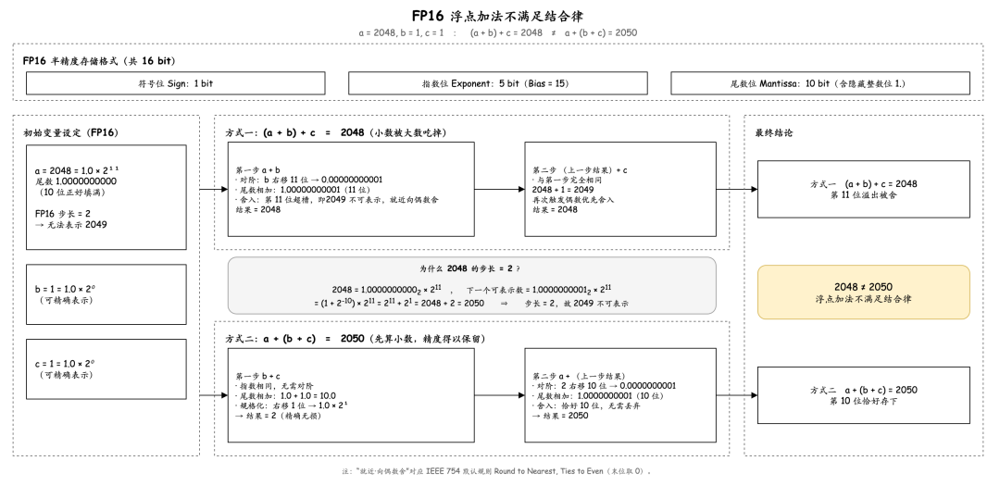
相对于定点数，浮点数的本质是科学计数法，主要是为了在有限的位数内（如仅仅 16 bit 或 32 bit），实现动态的数值范围与绝对精度间的trade-off。指数越大能表示的数值范围也就越大，同时因为尾数位数长度固定，指数越大能表示的绝对精度也就越低。绝对精度（即步长）的计算公式为：ULP(x) = 2E - M，其中 E 是该浮点数的真实指数，M 是尾数位数。
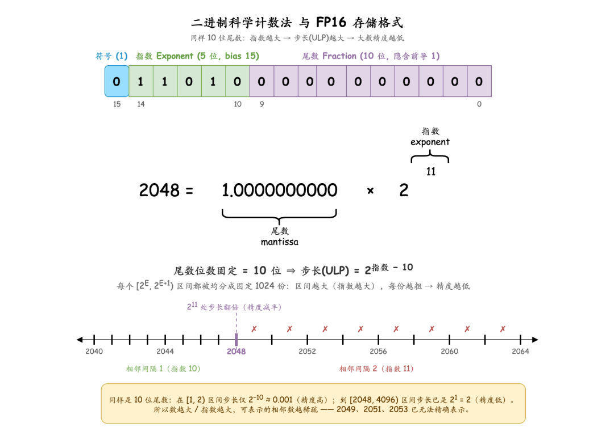
根据 IEEE 754 标准，FP16 包含 1bit符号位、5bit指数位和 10bit尾数位。当数值为 2048（即 211）时，其规格化表示为 1.00000000002 × 211。此时，相邻可表示数之间的步长（ULP）增至 2，这意味着 FP16 的下一个可表示数为 2050，无法精确表示 2049。当底层硬件执行 2048 + 1 时，运算器内部会借助更宽的 GRS 扩展位（保护位、舍入位、粘滞位）得出精确结果 2049。但当结果需要写回 10 位尾数时，由于 2049 恰好位于 2048 与 2050 的正中间，系统触发了向偶数舍入（Round to Nearest, ties to Even）的规则，最终结果被强行舍入回 2048。
这里需要说明是：
这个例子只是为了说明“浮点加法不满足结合律”。在实际 推理过程中， GEMM 是 FP16/BF16 输入、FP32 累加；batch variance 依然存在，根因是 reduction topology 改变，而不只是 FP16 存储精度低。
| 数值 | 规格化表示 | 真实指数 | 实际存储指数 | 物理尾数位 (10 bit) | 累加拆解 |
|---|---|---|---|---|---|
| 0.5 | 1.00000000002 × 2-1 | 01110) | 0000000000 | 2-1 | |
| 1 | 1.00000000002 × 20 | 01111) | 0000000000 | 20 | |
| 2 | 1.00000000002 × 21 | 10000) | 0000000000 | 21 | |
| 2046 | 1.11111111102 × 210 | 11001) | 1111111110 | 210 + 29 + ⋯ + 21 | |
| 2047 | 1.11111111112 × 210 | 11001) | 1111111111 | 210 + 29 + ⋯ + 20 | |
| 2048 | 1.00000000002 × 211 | 11010) | 0000000000 | 211 | |
| 2050 | 1.00000000012 × 211 | 11010) | 0000000001 | 211 + 21 |
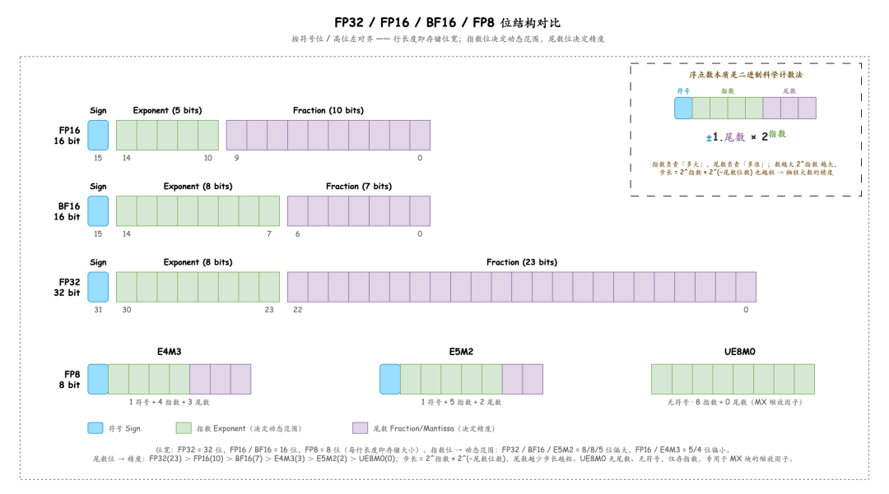
那么问题又来了，都有哪些操作会改变浮点加法顺序呢？这个我们要从矩阵运算说起。
GEMM的Batch Invariance
GEMM操作为啥会改变浮点加法顺序呢？这要从GEMM的优化策略说起。
GEMM的优化策略
要理解这个问题，必须要先理解内存墙下 GPU GEMM算子的演进路线。很多人可能会问：不就是一个基础的矩阵乘法吗，怎么搞得这么复杂？
答案是：极其复杂，甚至整个 AI Infra 领域都在围绕它疯狂卷细节。 核心原因在于：现代 GPU 的计算单元（Tensor Core）算力增长太猛，远远甩开了显存带宽的增速。这就导致 GPU 大部分时间都在等数据搬运，计算单元由于未能及时获取输入数据，大量时间处于空闲等待状态（即 Compute Bound 退化为 Memory Bound）。这就是所谓的内存墙（Memory Wall）。
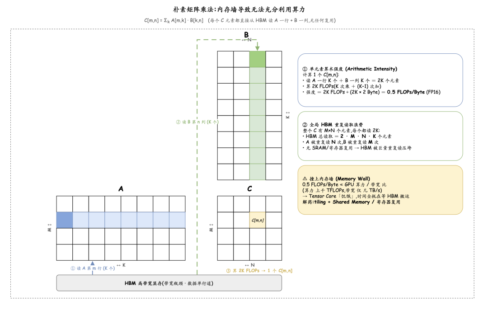
for i from 0 to M: // 外层：遍历 A 的行 (总共 M 行)
for j from 0 to N: // 中层：遍历 B 的列 (总共 N 列)
for k from 0 to K: // 内层：计算 A第i行 和 B第j列 的点积 (长度为 K)
C[i,j] += A[i,k] * B[k,j]
Tiling - 分块矩阵乘法
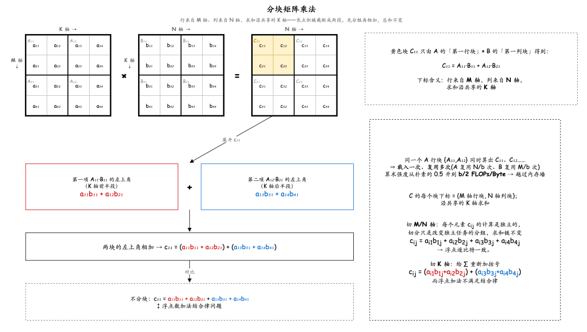
如果单纯按照上述公式逐个元素去计算，每次乘加运算都需要从极其缓慢的全局显存（HBM）中读取数据。由于完全没有利用到片上高速缓存（SRAM / 共享内存）和寄存器（Registers），这会导致海量的 HBM 重复读操作，使得算力无法的充分利用。
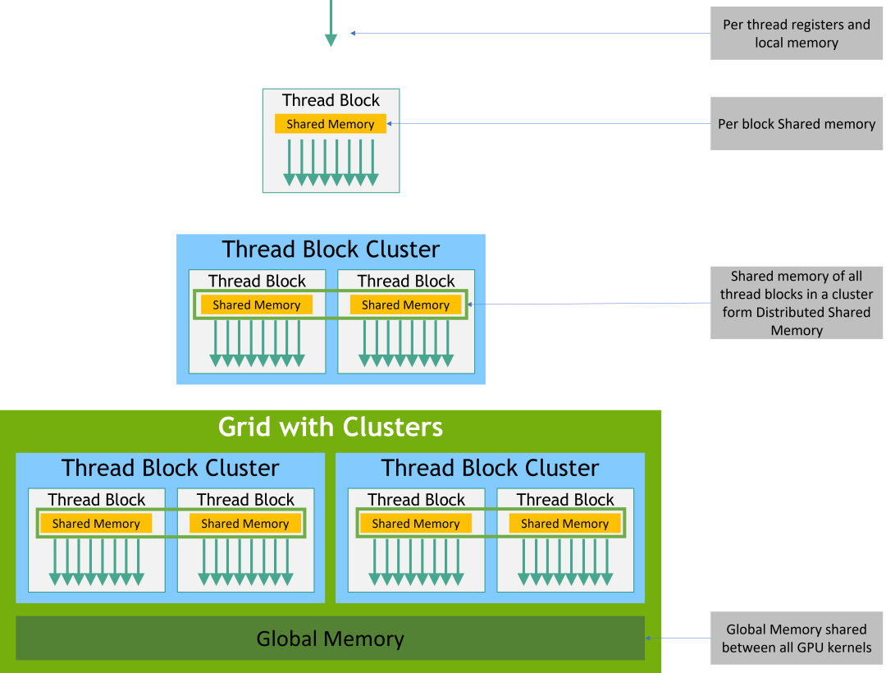
为了打破内存带宽的瓶颈，业界演化出了 IO-Aware（I/O 感知） 的分块算法。其核心思想是：化整为零，将大矩阵切分成适合放入缓存的小块。 调度时，将每个CTA（Cooperative Thread Array/ Thread Block）与结果矩阵 C 的一个特定小块 Cij 绑定，让该 CTA 全权负责这个小块的计算。
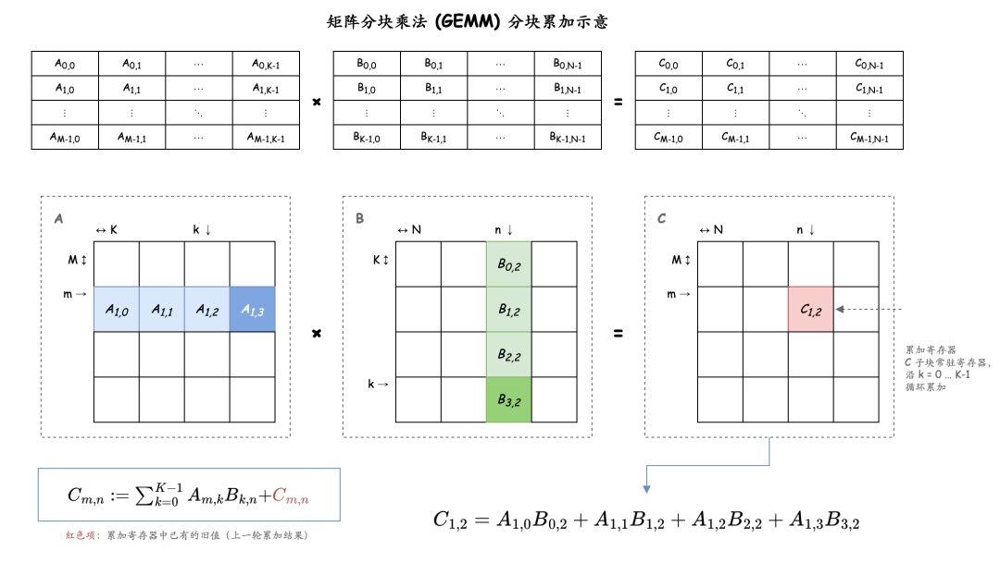
一个 CTA 负责计算 Cij 的完整数据流转逻辑如下：
初始化累加器
分配寄存器，专门用于存放目标分块 Cij 的中间累加结果。沿着K 维度规约
沿着公共维度 K 步进扫描。在每一个步长（Step p）内执行以下流水线：Load (HBM → SRAM)：将当前计算所需的子块 Aip 和 Bpj 从缓慢的全局显存，一次性批量搬运到速度更快的共享内存（SRAM）中。
- Compute (Warp GEMM)
：各个 Warp 从 SRAM 中将数据提取至寄存器，交由 Tensor Core 执行极速的矩阵乘法。 - Accumulate
：将本轮算出的乘积结果，就地与寄存器中的累加器相加。不写回显存。
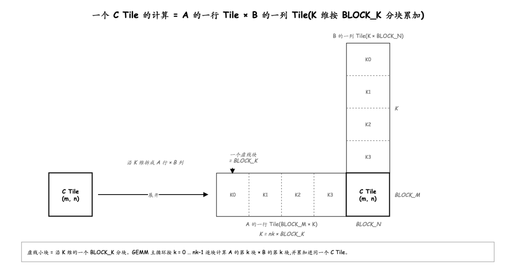
收尾与写回（Epilogue）
当 K 维度的循环全部跑完，寄存器中的累加器便得到了 Cij 的最终精确值。此时，再将其统一写回全局显存（HBM）。
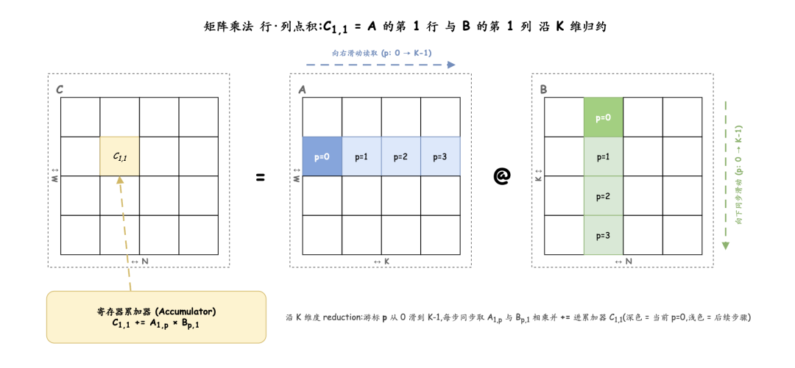
Split-K
基于我们刚刚梳理的逻辑：每个 CTA 负责输出矩阵 C 的一个 Tile，并在内部沿着 K 维度串行跑循环。
但现实中经常会遇到一种极端情况：假设 K 的维度极其庞大，而输出矩阵 C （即 M 和 N 维度）非常小，小到只能切出 4 个 Tile。
此时，GPU 硬件调度器只会拉起 4 个 CTA 去干活。要知道，一块 NVIDIA H100 拥有 132 个 SM，这就意味着有 128 个 SM 处于完全空闲的状态，都在等待那 4 个 CTA 在极其漫长的 K 维度上苦哈哈地跑 Loop，GPU 的算力也被极大的浪费了。
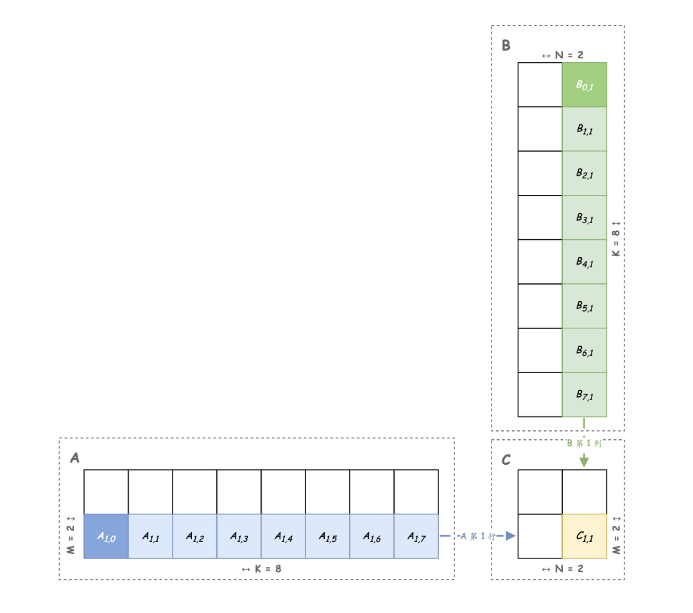
既然在空间维度（M, N）上切不出更多的任务，比如在 LLM 推理的 Decoding 阶段，Batch Size 极小，M=1，如果强行只按空间切分，会导致 GPU 上大量核心无活可干，那能不能在K维度拆分，分配给不同的CTA计算呢？——这就是所谓的 Split-K 优化策略。它的核心思想是：打破单个 CTA 独自计算整个 K 维度的逻辑，把 K 维度切分成多段（Split_K），让多个不同的 CTA 同时处理同一个 Cij 块在不同 K 片段上的局部乘积累加。
（特别注意：其实在普通的 Tiling 计算时，也是沿着 K 维度分段计算的。但两者有本质区别：BLOCK_K 是时间上的串行，同一个 CTA 每次从全局显存搬运 BLOCK_K 大小的数据，在寄存器中按固定顺序累加；而 SPLIT_K 是空间上的并行，强行把任务分发给物理上独立的多个 CTA 同时计算。）
如图所示，假设设置 Split-K = 2，不同颜色的 Tile 分别由两个独立的 CTA 并行处理，算力利用率瞬间翻倍。最终通过atomic_add将结果累加到C的同一位置。 这里需要注意的是：SPLIT_K 太大, atomic_add 竞争增加,收益会递减。
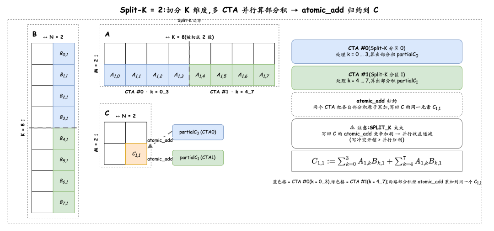
当然除了atomic_add的方式，还有一种实现方式： Workspace Reduction，具体工作流程：
分配 Workspace（显存分配）：在HBM中额外分配一块大小为
[split_k, M, N]的临时内存缓冲区（Workspace）。执行 Partial GEMM Kernel: 启动主矩阵乘法 Kernel。每个 Thread Block 负责计算 K 维度上的一个切片。计算完成后，不使用原子加，而是将局部结果直接写入到 Workspace 中属于自己的那个切片位置（即
workspace[k_idx, m, n]）。执行 Reduction Kernel：主 Kernel 执行完毕并同步后，启动第二个独立的轻量级规约 Kernel。这个 Kernel 负责沿着 split_k维度，将 Workspace 中的局部结果相加，并将最终的求和结果写入到目标输出矩阵 C 中。
GROUP_M - Swizzle L2 Cache
通过约束 CTA在矩阵C中的调度顺序，避免了由于跨度过大的离散内存访问而导致的 L2 Cache 抖动（Cache Thrashing）和频繁的数据驱逐。它在逻辑上将多个独立的 CTA 重新组合成一个维度为 GROUP_SIZE_M × N 的宏观调度矩阵。在这个被限定的连续执行区间内，由于被调度的 CTA 集中处理空间上相邻的输出块，它们能够共享已加载至 L2 Cache 中的矩阵 A 和 B 的数据，从而最大化数据的时间局部性与 L2 Cache 的复用率。这何尝不是另外一种维度的Tiling呢 ? 只是为了复用L2。而之前我们提到的Tiling，是为了复用SRAM和寄存器。更进一步Tensor Parallel(Column/Row Parallel)其实也是更高维度的Tiling呢～
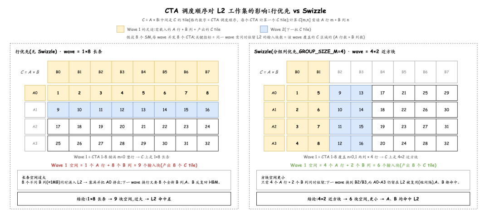
算子调优
前文探讨了 Tiling、Split-K、Swizzle 等旨在缓解访存瓶颈的核心优化策略。但在实际的 GPU 硬件执行层面，针对不同规模的输入张量（Tensor Shape），系统必须确定具体的并行化切分配置：即矩阵分块的具体维度（BLOCK_M / BLOCK_N / BLOCK_K）以及 K 维度的切分段数（SPLIT_K）。这些切分参数的选择，不仅直接决定了算子的访存效率与硬件利用率（Occupancy），更关键的是——分块参数的动态变化会重塑底层浮点数累加的归约拓扑（Reduction Tree），这是导致大模型推理在不同批次下失去Batch Invariance的根本原因。
为了解析推理引擎底层为何会根据输入特征动态变更这些调度参数，我们需要先回顾 GPU 算子的编程范式演进，并深入探讨现代编译器引入的自动调优（AutoTune）机制。
CUDA VS Triton
在之前的《AI Infra入门：GPU是如何工作的》中，我们探讨了 CUDA 编程模型与 GPU 硬件执行模型： Grid定义了内部Thread Block的组织形式(gridDim)；Thread Block定义了内部thread的组织形式(blockDim)。
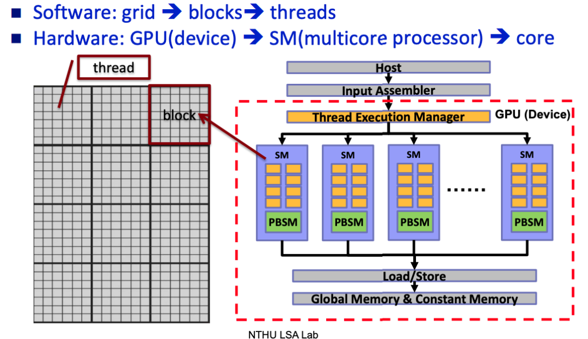
然而，原生 CUDA 编程的门槛依然极高，开发者需要手动实现各种底层且繁琐的优化逻辑。OpenAI Triton 的出现，彻底改变了这一现状。大幅降低了编写高性能 GPU 算子（Kernel）的门槛，让开发者能以接近 Python 的生产力，写出接近 CUDA C++ 专家级性能的代码。借助内核融合（Kernel Fusion）、IO-Aware 等底层优化技术，Triton 不仅保证了极致性能，还兼顾了极佳的硬件无关性。
两者核心思想的差异在于编程范式：
CUDA（以线程为中心）：开发者需要显式定义底层网格，例如 <<>>，由底层生成 128 个线程，硬件再将其划分为 4 个 Warp 调度执行。 Triton（以Tiling/Block 为中心与自动调优）：开发者只需关注数据分块，并可通过 @triton.autotune 装饰器提供一个配置搜索空间（如不同的分块大小、测试 4 个或 8 个 Warp）。Triton 编译器不仅会在底层自动将需求（如 4 个 Warp）精准映射为 4×32=128 个线程以屏蔽硬件细节（即<<>> ），更会在运行时自动进行基准测试，智能选出当前硬件下的最优参数组合。
在 PyTorch 2.0 及更高版本中，引入了OpenAI Triton作为编译器：
前端分析：当用户调用 torch.compile(model) 时，PyTorch 的前端（如 TorchDynamo）会捕获计算图。 后端优化与代码生成：默认后端 TorchInductor 会分析图中可以被 Kernel Fusion 的操作，生成 OpenAI Triton 代码。 JIT编译与执行：最后，由 Triton 的 JIT (Just-In-Time) 编译器接管这些代码，将其编译成一个为特定 GPU 硬件高度优化的、单一的融合内核（Fused Kernel），最终高效执行。
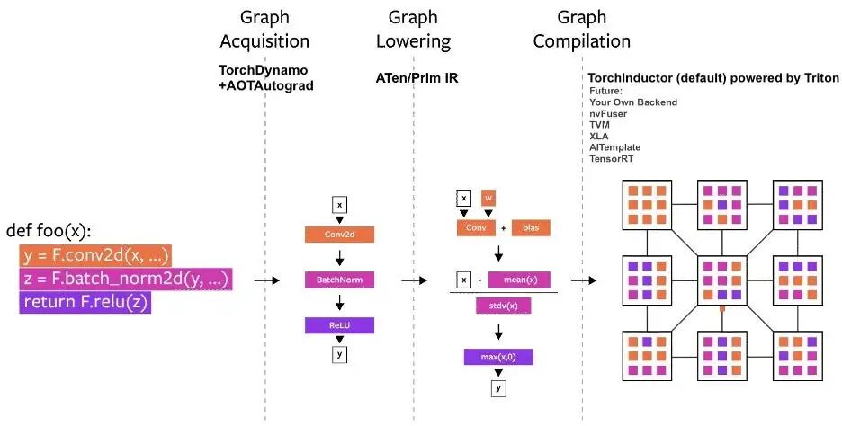
在这一生态体系下，PyTorch（借助 Inductor + Triton）自动接管了过去需要 CUDA 专家耗费大量精力才能完成的性能调优工作。尽管自动调优的 Inductor+Triton 在绝大多数场景下都能带来巨大的性能飞跃，但它本质上仍是一个通用型的自动化方案。当面对极其关键、对性能压榨到极致的特殊算子时，纯手工的底层优化依然不可或缺。
当然，无论是让编译器自动调优，还是我们手动调优，都必须穿透抽象，理解 GPU 底层最核心的物理边界与调优逻辑。
在硬件执行层，多个 Thread Block 可以共享同一个流多处理器（SM）。只要 SM 的物理资源（寄存器、共享内存等）还没被占满，硬件调度器就会把更多的 Block 塞进同一个 SM 里并发执行。然而，每个 SM 都有硬性的并发规格上限（例如最大线程数 2048，最大 Block 数 32）。
同一个Thread Block 内的 Thread 可以通过共享内存（Shared Memory）进行数据交换，并且可以进行同步（__syncthreads()）。
寄存器限制
A100/H100 每个 SM 的物理寄存器文件大小固定为 65536 个 32-bit 寄存器（256 KB）。每个硬件线程最多只能分配 255 个寄存器。 而单个线程需要的寄存器数由两部分组成：
基础开销（Base Overhead）：每个线程私有的，用来存内存指针、循环计数器、TMA 状态等；
累加器分摊（Accumulator Share）：假设输出块大小，即Accumulator 为 BLOCK_M × BLOCK_N，这寄存器是被所有线程平摊的。每个进程的寄存器用量为：BLOCK_M × BLOCK_N / NUM_WARPS / 32。如果Tiling变大，必须同步增加num_warps,否则会导致Register Spilling；
关联公式：(BLOCK_M * BLOCK_N) / (num_warps * 32) <= 255 通常需控制在 128 左右, 如果超过255，num_warps 必须调大，或者 BLOCK 必须调小。
执行范式与共享内存限制
在传统的 CUDA 优化实践中，提升 Occupancy（占用率）以隐藏访存延迟是一项核心原则。即线程级并行（TLP）隐藏延迟：SM 上驻留的活跃 Warp 数量越多（即 Occupancy 越高），硬件调度器（Warp Scheduler）在当前 Warp 因访存而阻塞（Stall）时，就越容易找到其他处于就绪状态的 Warp 进行切换。通过这种零开销的上下文切换，系统使得计算指令与内存访问在时间上相互重叠，从而有效隐藏了全局内存的物理延迟。
然而，在 Ampere / Hopper 架构中，Tensor Core 提供了极高的浮点吞吐量，但 HBM 的物理访存延迟并未同比例缩减。在这种计算能力远超访存带宽的背景下，高 Occupancy 策略的边际效益急剧衰减：即使 SM 上驻留了大量 Warp，它们也会迅速耗尽当前计算任务，并集体触发访存请求，导致所有 Warp 同时陷入阻塞。此时，单纯依靠线程级的上下文切换已无法掩盖内存级别的物理延迟。
为维持 Tensor Core 的高吞吐率，现代 GPU 引入了硬件级异步内存拷贝机制（如 Ampere 架构的 cp.async 和 Hopper 架构的 TMA 引擎）。num_stages 的核心思想是利用多级缓冲（Multi-Buffering）实现计算指令与数据搬运指令的异步并发。即GEMM的优化方向从高并发掩盖访存延迟转向通过 Asynchronous Pipelining (异步流水线) 来掩盖延迟。
若 num_stages 配置过小（如默认值 2），计算过程易因等待数据就绪而产生气泡（Pipeline Bubble），导致总体吞吐量受限。若配置过大，除导致 SRAM 溢出触发编译失败（Out of Shared Memory）外，管理多级流水线状态的指针还会消耗额外的寄存器资源，造成性能倒退。在不同硬件架构（如 SRAM 容量更大的 H100）上进行高阶调优时，核心痛点在于寻找能够最大化重叠率、且不触发资源溢出的最佳边界配置参数。
(BLOCK_M * BLOCK_K + BLOCK_N * BLOCK_K) * 字节数 * num_stages <= SMEM物理上限 (如 H100 是 228KB)
调优Trade-Off
以 Llama-3-8B Q/K/V Linear Proj - Fused QKV为例，hidden_size为4096， qkv_proj_size为6144，如下：
| QKVout = X · Wqkv | [num_sched_tokens, hidden_size] | [hidden_size,qkv_proj_size] | [num_sched_tokens, qkv_proj_size] | 4096 (Q) + 1024 (K) + 1024 (V) = 6144 |
即：M=num_sched_tokens,N=6144,K=4096，其中BLOCK_K一般设置为 16、32 或 64。
BLOCK_M / BLOCK_N的设置：
M很大时（M>4096)，原则上我们希望提升计算强度，BLOCK_M × BLOCK_N 尽可能的大，极大地复用SMEM，此时需要寻找 num_warps 的平衡点，num_warps太小会导致干活的线程少，单个线程分摊到的累加器寄存器过多，进而击穿单线程最多 255 个寄存器的物理上限，触发Register Spilling；而num_warps太大会导致基础开销占比大，一个CTA占用大量SM资源，从而导致GPU Occupancy 降低。需要一个合适的num_warps来确保 BLOCK_M × BLOCK_N 足够大。
M很小时 （M<64），缩小 BLOCK_M 贴合 M，为了充分利用 SM 的算力，可以 1. 适度缩小 BLOCK_N从而产生更多的Tile分发给不同的 SM； 2. 开启 Split-K，在 K维度拉起更多 CTA 并行计算。
一级缓存 (L1) | |||
并发度 (Occupancy) | 太大：单个 Block 占用过多 Warp，导致一个 SM 里装不下几个 Block，并发度（Occupancy）暴跌。 | ||
延迟掩盖 | |||
算力利用率 |
Batch Invariance的来源
前文探讨了诸多优化策略，那么具体是哪些参数的变动导致了浮点加法顺序的改变？
从数学本质来看，矩阵乘法 C = A × B（其中 A 为 [M, K]，B 为 [K, N]，C为 [M, N]）中任意元素 Ci,j 的计算逻辑是恒定的——即取 A 的第 i 行与 B 的第 j 列进行点积：
Ci,j = Σk=0K-1 Ai,k × Bk,j
在 Triton / CUDA 的底层优化中，针对各项调度参数的动态调整，其对确定性的影响有着本质区别：
BLOCK_M与 BLOCK_N（无影响）：分块逻辑为加载 Tile_A[BLOCK_M, BLOCK_K]与 Tile_B[BLOCK_K, BLOCK_N]，并计算输出 Tile_C[BLOCK_M, BLOCK_N]。这仅仅是在做空间维度的任务映射，决定了哪些元素被打包在一起独立计算，以及由哪个具体的 CTA (Thread Block) 负责计算哪一块区域。对于输出矩阵 C 中的特定元素 Ci,j 而言，无论它被分配给哪个 CTA、与哪些相邻元素一起被计算，其底层的 K 维度点积逻辑并未改变。因此，改变这两个参数不会影响浮点加法的顺序。GROUP_M / Swizzle（无影响）：Swizzle 本质上是改变了多个 CTA 在网格（Grid）级别的调度顺序，以此来提高 L2 Cache 的命中率。它决定的是先算哪一个空间块，后算哪一个，完全没有干涉某一个特定分块内部的乘积累加过程。因此，Swizzle 同样不会破坏Batch Invariance。 BLOCK_K（引入确定性误差）：定义了在规约维度（Reduction Dimension）上的步长。改变 BLOCK_K会直接改变单次循环中加载到寄存器中的数据量，进而改变 Tensor Core 内部 MMA指令的累加树拓扑。这种改变会导致浮点加法顺序的变化（即不同BLOCK_K产生不同结果，但同一BLOCK_K结果恒定）。SPLIT_K（引入非确定性误差）：将 K 维度强行切分给多个 CTA 并发执行。如果采用Atomic Add进行结果合并，由于 GPU 硬件调度线程块的先后顺序是完全随机的，加法顺序是完全随机不可控的。即便采用Workspace Reduction， SPLIT_K段数的动态变化同样会改变累加树拓扑。num_warps和 num_stages的本质是硬件资源分配与流水线调度（决定分配多少个cta去算、开辟几份缓存池做异步搬运）。并不改变宏观的矩阵点积计算逻辑和Reduction Tree拓扑。
综上所述，推理引擎在性能与确定性之间存在着固有的架构冲突，为了追求极致的访存复用（动态调整 BLOCK_K）与并提升流多处理器（SM）的并发利用率（动态开启 SPLIT_K），底层的启发式调度策略不可避免地改变了浮点运算的Reduction Tree拓扑，这正是大模型在动态 Batch 下丢失Batch Invariance的根本原因。那么在真实的推理场景中，该如何修补这个机制？接下来我们深入 vLLM 的实现，看看它是如何在底层硬件特性和上层调度逻辑之间做 Trade-off 的。
vLLM中GEMM的Batch Invariance支持
怎么解决呢？直觉上，只需要在推理引擎中全局禁用 Split-K 并锁死 BLOCK_K 即可。但现实的工程实现远比这复杂。现代推理引擎（如 vLLM）底层的 GEMM 操作的下发路径涉及多层抽象与多种后端。实现严格的 Batch Invariance 并非单一配置的修改，而是需要针对特定的软硬件运行环境，进行多维度的执行路径路由与参数约束。具体的GEMM执行路径决于以下三个维度的组合：
硬件架构（Architecture）：SM80 (Ampere) 与 SM90/SM100 (Hopper/Blackwell) 的底层 GEMM 执行范式截然不同——前者靠 warp 级并发掩盖访存延迟，后者靠 TMA + WGMMA 的异步流水线。执行范式不同，实现Batch Invariance的逻辑也会不同。 数据精度（Data Type）：bf16/fp16 由生态最成熟的 cuBLASLt 承接；而 fp8/fp4 等低精度会转向 CUTLASS（乃至 DeepGEMM 等）专用 kernel。不同后端控制逻辑也不一致。 算子入口（API Backend）： nn.Linear走的是 vLLM 自己的 dispatch，可直接路由到定制高性能内核；而裸torch.mm / bmm走 PyTorch dispatcher → cuBLAS/cuBLASLt，调度权在框架和闭源库手里。
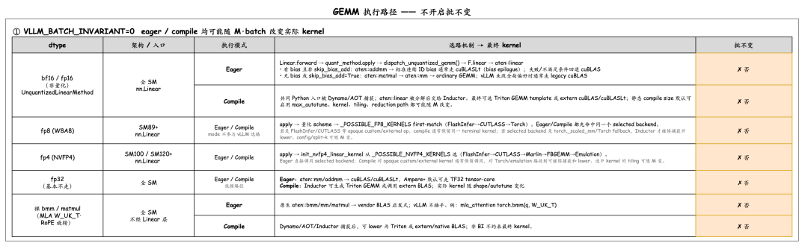
SM8x vs SM90/SM100
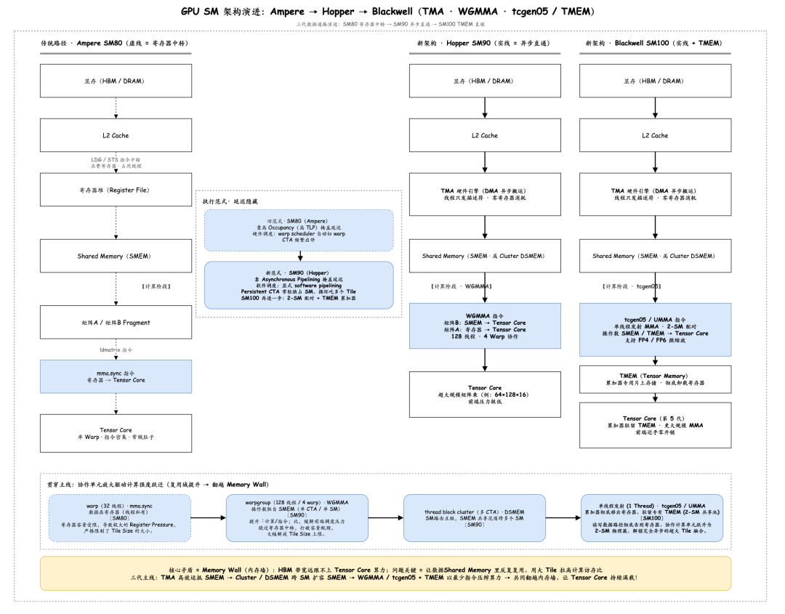
SM80: warp维度的tensor core(mma.sync)调度 : 优化逻辑是提高占用率，warp同时负责搬运和计算。
4096 * 4096 ->CTA Tile（如128*128） -> Warp Tile（32 * 64） -> mma 指令级(16 * 8 * 16)
SM90/100 TMA 硬件单元的引入和 WGMMA 指令（Warp Group 128 线程）促成了范式转移通过Asynchronous Pipelining (异步流水线)来掩盖延迟。
4096 * 4096 -> CTA Tile (如 256 *128) -> Warp Group Tile (64 *128) -> wgmma 指令级 (64 *N * 16)
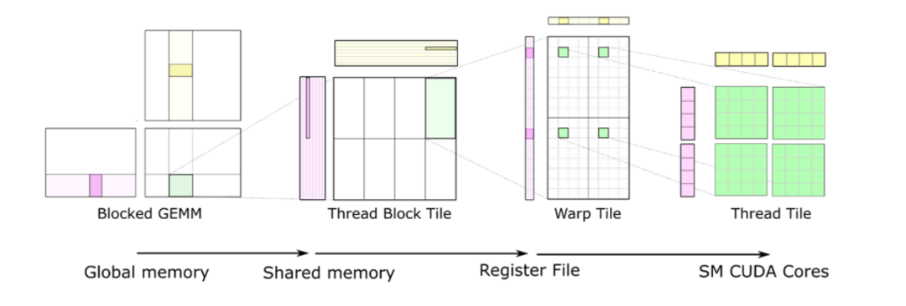
对于大矩阵，由于 CTA 分配到的总体空间足够大，每个 Warp 都能分到一块足够大的专属空间（例如 32x64）。然后直接把大 Tile 切成小 Tile 分给 Warp，这样多个 Warp 之间交替访存和计算从而掩盖内存延迟。大家都各自在 K维度独立、串行执行到底，互不干涉，run-to-run是没问题的。
但是batch-to-batch情况下BLOCK_K的发生变化，因此会引发浮点加法顺序的波动？
实际上呢，也不一定，这取决于warp level的K是不是恒定的。比如启发式的auto tune可能导致BLOCK_K从32变成64，但是实际的底层执行以K=16为步长，依次处理K维度的tile，因此就从底层消除了Batch Variance。那是不是就是说可以忽略BLOCK_K的影响，只关注Split-K就行了。讲道理，这个在大矩阵上大概率是成立的。
对于小矩阵，比如32*32分配到一个CTA（K=4096），那每个warp可能只能分配很小的Tile，从而没有足够多的Tile，即M/N并行度不足->活的warp少,占用率低-> 这种情况下在K维度串行执行就无法充分利用隐藏延迟的特性。因此，系统被迫让所有 Warp 重叠在这同一块 32 * 32 的矩阵上，强行在时间（K）维度上进行切分（Warp-level K-Slicing）。 多个 Warp 各算一段 K，最后在共享内存里通过Reduction Tree合并。一旦 Batch 参数变动导致 K 切分段数改变，规约树形状就会改变，从而引发了浮点加法顺序的波动。
当然对于小矩阵，GEMM 库此时可能选择更小的 tile、GEMV/SIMT、persistent kernel、warp-level K-slicing、CTA-level Split-K 或 Stream-K 等不同算法。
Warp-level K-slicing 会让多个 warp 分别计算同一输出 tile 的不同 K 分片，再在 CTA 内合并 partial results；它可以增加单 CTA 内的有效 warp 数，但不能增加 grid 中的 CTA 数量。为了提升SM的利用率，通常需要 CTA-level Split-K。
不过到了SM90+,降低了对传统高 occupancy 隐藏访存延迟的依赖，标准 WGMMA mainloop 中，一个warpgroup 共同维护分布式 accumulator，并依次处理 K tile，不需要生成多个独立 warp partial result 后再做 CTA 内 reduction。
所以我们可以看到代码注释："Hopper (SM90) and Blackwell (SM100): the only source of batch variance is split-k"， 即在SM90 Hopper / SM100 Blackwell上，当前受支持和测试的 FP16/BF16 PyTorch/cuBLASLt 路径，在禁止 Split-K batch invariant。
这里需要特别说明的是，SM90/SM100锁定Split-K可以获取batch invariance，SM8x需要同时锁定BLOCK-K和Split-K才能获取batch invariance都是基于测试的，因为 cuBLAS / cuBLASLt 是闭源的。
当然也有很多人误认为Split-k多workspace时，规约树是按顺序规约的，可以保证结果不变，但是这个只是run-to-run维度的，一旦K变化，结果还是会变化。
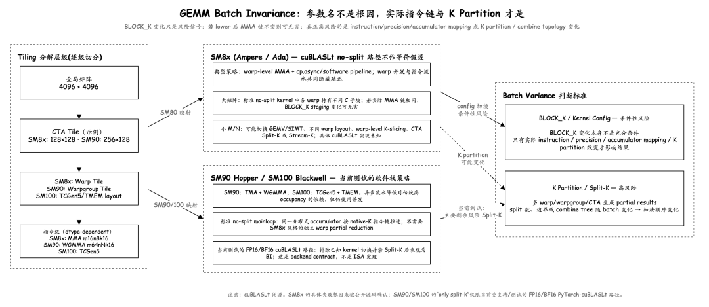
说了这么多，其实呢，最终浮点数加法的顺序，不仅受mainloop 的 BLOCK_K staging 决定的（CTA Tiling ），也受更低维度的Warp Tiling/Warp Group Tiling（以及硬件原子指令粒度）决定。但是呢，要解决这个问题却要从CTA Tiling角度来。
SM80上GEMM的Batch Invariance支持
对于SM80要同时关注SPLIT_K和BLOCK_K。其实对于Linear层的GEMM无论SM是哪个版本/无论是eager还是compile mode，都会走到linear_batch_invariant -> matmul_persistent。
# class UnquantizedLinearMethod(LinearMethodBase):
def apply(
self,
layer: torch.nn.Module,
x: torch.Tensor,
bias: torch.Tensor | None = None,
) -> torch.Tensor:
if envs.VLLM_BATCH_INVARIANT and current_platform.is_cuda_alike():
return linear_batch_invariant(x, layer.weight, bias)
return dispatch_unquantized_gemm()(layer, x, layer.weight, bias)
而对于非线性层的计算，比如代码中直接调用torch.mm,则还需要额外考虑。由于SM80在cuBLASLt上不支持禁用BLOCK_K,只能更换Triton实现，最终也会走到matmul_persistent。其中matmul_persistent是一个persistent kernel 即griddim=num_sm，固定 K 顺序、固定 tile、不切 SPLIT_K。
if current_platform.is_device_capability_family(80):
# SM80 (Ampere) cannot rely on cuBLASLt-only determinism; install the
# triton persistent matmul overrides for mm/addmm/matmul/linear.
_batch_invariant_LIB.impl("aten::mm", mm_batch_invariant, "CUDA")
_batch_invariant_LIB.impl("aten::addmm", addmm_batch_invariant, "CUDA")
_batch_invariant_LIB.impl("aten::matmul", matmul_batch_invariant, "CUDA")
_batch_invariant_LIB.impl("aten::linear", linear_batch_invariant, "CUDA")
特别注意：compile mode下aten override不生效，所以会走到原始的aten::mm。
matmul_persistent 是怎么做到确定性的
对于bf16和fp16，所有SM版本的SM的 Linear，无论是eager还是compile mode，最终都落到 matmul_persistent 这个 Triton kernel。当然eager mode下， SM80的裸 mm的也会走到matmul_persistent。（compile mode下aten override不生效，所以会走到原始的aten::mm）
matmul_persistent 的实现逻辑很简单，相对于普通 GEMM 靠 @triton.autotune / cuBLASLt 启发式按 shape 挑 config，matmul_persistent 直接固定 config，彻底关掉 autotune。 每种 dtype 用一套硬编码的分块参数，特别是BLOCK_K，与输入的 M/N/K 无关：
configs = {
torch.bfloat16: {"BLOCK_SIZE_M": 128, "BLOCK_SIZE_N": 128, "BLOCK_SIZE_K": 64,
"GROUP_SIZE_M": 8, "num_stages": 3, "num_warps": 8},
# fp16 / fp32 各自一套，同样是常量
}
这里要澄清一点：
BLOCK_M/N/K、SPLIT_K对 Triton autotune 来说都只是普通 constexpr，而 split-k 本身是一种需要作者手写进 kernel 的实现模式（多一维 grid + atomic/reduction），并非 autotune 的自动优化策略。matmul_persistent没有实现 split-k，所以它既不受 autotune 影响，也天然不存在 Split-K 乱序——真正被写死的就只有BLOCK_K这一个变量。另外函数名里的persistent其实跟batch invariance无关，是说grid 只开
min(NUM_SMS, tile 数)、每个 program 常驻 SM 循环吃多个 tile），是为了避免频繁 launch 开销，tile→CTA 的映射本就由固定 config 决定，与确定性无关。
SM90/SM100上GEMM的Batch Invariance支持
对于，SM90/SM100只需要关注Split-K，即禁止SPLIT_K拆分；
bf16/fp16
上面已经提到了对于Linear层的GEMM无论SM是哪个版本，都会走到linear_batch_invariant，最终走到matmul_persistent。
对于直接调用torch.mm的部分，当前的逻辑是仍然走cuBLASLt，只是依赖设置确保Split-K=1。
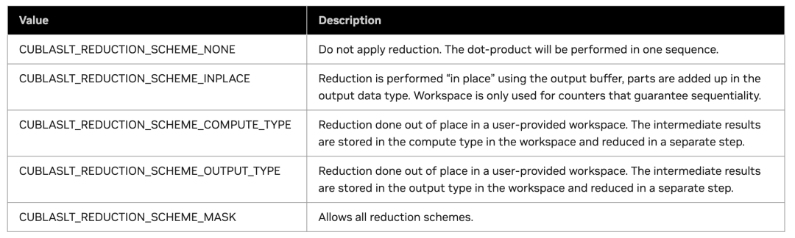
设置了preferred_blas_library(backend="cublaslt")之后，GEMM会优先走cuBLASLt，通过设置reduction mask，确保了bf16/fp16 Split-K=1。CUBLASLT_MATMUL_PREF_REDUCTION_SCHEME_MASK = CUBLASLT_REDUCTION_SCHEME_NONE
reduced_precision_val = (
(False, False) if is_torch_equal_or_newer("2.10.0") else False
)
torch.backends.cuda.matmul.allow_fp16_reduced_precision_reduction = (
reduced_precision_val
)
torch.backends.cuda.matmul.allow_bf16_reduced_precision_reduction = (
reduced_precision_val
)
torch.backends.cuda.preferred_blas_library(backend="cublaslt")
传统 cuBLAS 后端没有 reduction-scheme mask 这个能力,PyTorch 里一旦设了 allow_splitk=False 又没切到 cuBLASLt,会直接 TORCH_CHECK 报错:TORCH_CHECK(reduction != DisallowReducedPrecisionDisallowSplitK, "...allow_splitk=False) requires the cuBLASLt backend");
fp8
fp8 的入口是量化线性层里的 cutlass_scaled_mm，底层有 CUTLASS 与 cuBLASLt scaled_gemm 两条路。
选中 CUTLASS → 调它（csrc if(batch_invariant) 锁 config 不随 M
cuBLASLt scaled_gemm → 由于API设置mask仅支持bf16/fp16，对于fp8只能另外想办法。怎么办呢？把workspace的限制到尽量小，而split-k(COMPUTE/OUTPUT) 与 atomic(INPLACE) reduction 都需 workspace，最终可选策略只剩不需 workspace 的 NONE，即 split-k=1；但 scaled_gemm 没设置 reduction-mask，无 API 级保证。
os.environ["CUBLASLT_WORKSPACE_SIZE"] = "1"
FlashInfer → DeepGEMM
fp4
如果开启了batch invariant，无论 M 多大，都固定使用同一个配置 sm100_fp4_config_default。另外就是选择PersistentScheduler，确保K维度不拆分。
CUTLASS 3.x TileScheduler的定义：
cutlass::gemm::PersistentScheduler | data-parallel，不拆 K | |
cutlass::gemm::StreamKScheduler | 拆 K（stream-K/split-K） |
// Dispatch function to select appropriate config based on M
template <typename OutType>
void cutlass_fp4_gemm_dispatch(torch::stable::Tensor& D,
torch::stable::Tensor const& A,
torch::stable::Tensor const& B,
torch::stable::Tensor const& A_sf,
torch::stable::Tensor const& B_sf,
torch::stable::Tensor const& alpha, int64_t m,
int64_t n, int64_t k, cudaStream_t stream) {
if (vllm::vllm_is_batch_invariant()) {
using BiGemm = Fp4GemmSm100<sm100_fp4_config_default, OutType>;
static_assert(
cute::is_same_v<typename BiGemm::TileScheduler,
cutlass::gemm::PersistentScheduler>,
"batch_invariant requires a persistent tile scheduler; stream-K or "
"split-K would break numerical invariance");
runGemm<BiGemm>(D, A, B, A_sf, B_sf, alpha, m, n, k, stream);
return;
}
uint32_t const mp2 = std::max(static_cast<uint32_t>(16), next_pow_2(m));
if (mp2 <= 16) {
// m in [1, 16]
runGemm<Fp4GemmSm100<sm100_fp4_config_M16, OutType>>(
D, A, B, A_sf, B_sf, alpha, m, n, k, stream);
} else if (mp2 <= 256) {
// m in (16, 256]
runGemm<Fp4GemmSm100<sm100_fp4_config_M256, OutType>>(
D, A, B, A_sf, B_sf, alpha, m, n, k, stream);
} else {
// m in (256, inf)
runGemm<Fp4GemmSm100<sm100_fp4_config_default, OutType>>(
D, A, B, A_sf, B_sf, alpha, m, n, k, stream);
}
}
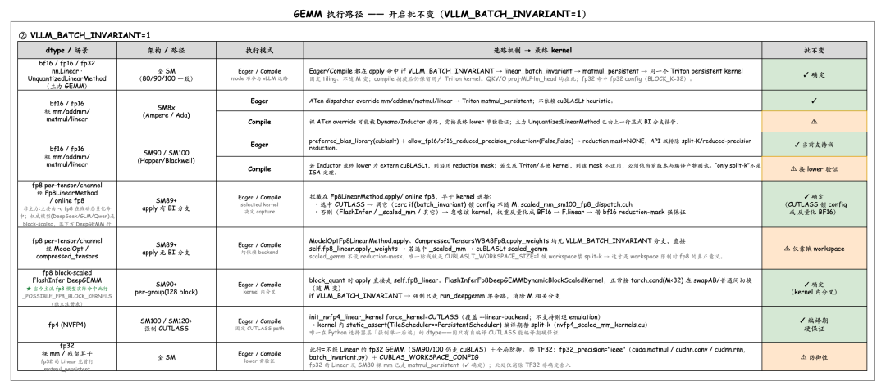
RMSNorm的Batch Invariance
RMSNorm - 均方根归一化
这个算子的输入是[num_tokens, hidden_size]，然后需要对于每个token的hidden做均方根归一化，均方根归一化的公式如下：
y = (x)/(RMS(x)) ⊙ γ ，其中均方根（RMS）的计算：RMS(x) = √((1)/(d) Σi=1d xi2 + ε)
要理解具体的执行过程和优化逻辑要对于GPU的体系架构有一定的了解，可以参考本人的《AI Infra入门：GPU是如何工作的》，这里就不在赘述了。
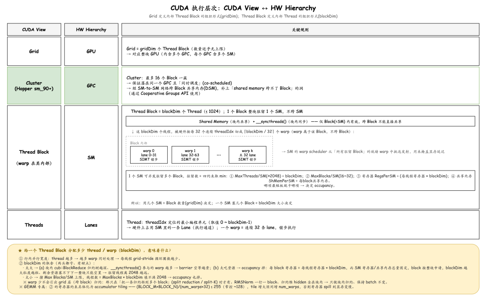
由于RMSNORM需要做token维度的均方根归一化，这里显而易见，要确保每个token的hidden分配到一个thread block，这样可以避免跨thread block的同步。
dim3 grid(num_tokens);
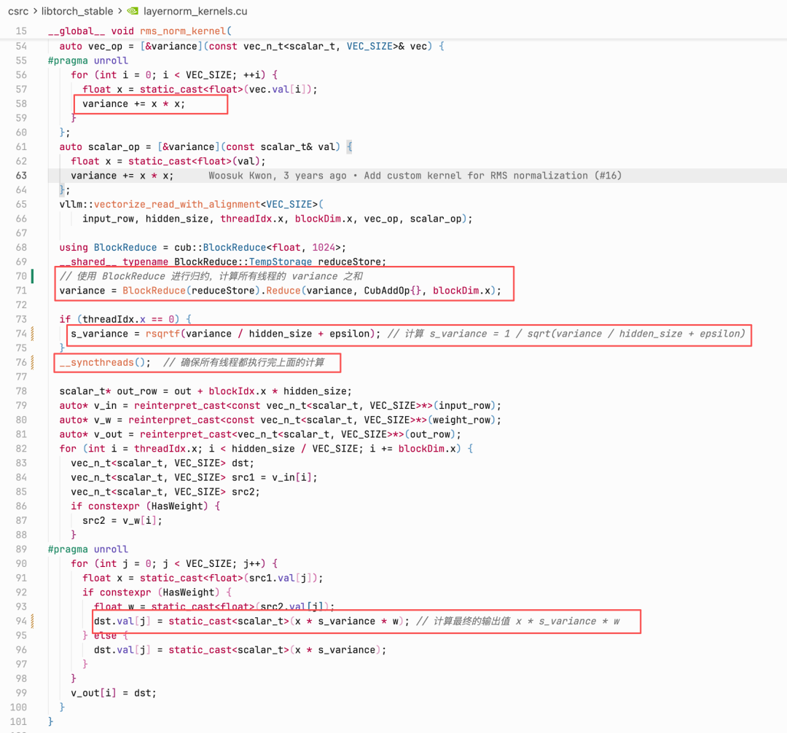
那怎么定义blockDim呢？首先要明白blockDim意味着什么, blockDim本质是分配给这个block的并发thread。这个东西太大的话，block内的规约和同步的成本都会变高；太低呢，每个SM又有max block上限，导致GPU Occupancy低。
// For large num_tokens, use smaller blocks to increase SM concurrency.
const int max_block_size = (num_tokens < 256) ? 1024 : 256;
const int block_size = std::min(hidden_size / calculated_vec_size, max_block_size);
dim3 block(block_size);
一般情况下，任务足够做（即num_tokens够时），无论block_size大小，都能有很高的占用率。这时候 block_size 一般设置为 256 ，可以避开大 Block 带来的 __syncthreads() 同步的问题，实现各个小 Block 之间的高效并发。（也有些场景小Block会导致grid层面的规约变多，但是由于RMSNORM是token维度的计算，只有block层面的规约，因此没有这个问题）
而当num_tokens很少时，情况就变了。比如只有2个token，即2个thread block，那顶多也就占用2个SM，这时候完全不用考虑全局Occupancy的问题了。这时候要考虑的就是尽可能充分利用SM的并发算力，即足够多的线程/warp，让stride loop次数变少，因此设置一个较大的block_size即可。性能提升参考这个PR #27931 Kernel Optimize rms_norm kernel。
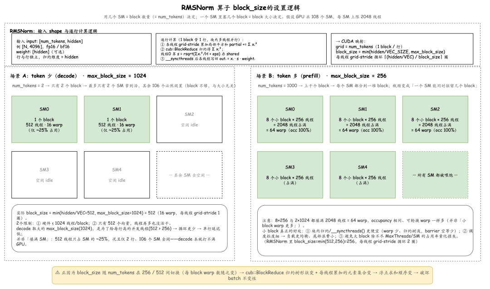
然而block_size则会影响1. 每个线程本地累加的元素分组；2. BlockReduce 树形归约的形状（层数、warp 分组）。从而导致浮点数加法顺序发生变化。
那怎么避免呢？
vLLM中RMSNorm的Batch Invariance支持
以上可以看到,rms_norm 的算法与优化本身都很简单。但它的 dispatch 逻辑其实相当复杂:仅仅是确定"在多后端、多平台、eager/编译等多种组合下该走哪个算子实现",就要花费很大力气。这里涉及vLLM IR、CustomOp、Torch Inductor 3层dispatcher,这里就不深入了，后续深入文章再深入解读下。
forward_cudaforward_native→IR[vllm_c, native] | CUDArms_norm → rms_norm_kernel<scalar_t, vec_size, tensor_rank, has_weight> | ||||
forward_cudaforward_native→IR[vllm_c, native] | CUDAfused_add_rms_norm → fused_add_rms_norm_kernel<scalar_t, width, has_weight> | ||||
forward_cudarms_norm_batch_invariant | Triton_rms_norm_kernel | ||||
forward_cudarms_norm_batch_invariant→ops.fused_add_rms_norm | CUDAfused_add_rms_norm → fused_add_rms_norm_kernel<scalar_t, width, has_weight>; block pinned → 1024 | ||||
forward_native[native] | |||||
forward_native[native] | |||||
static_scaled_fp8_quant → fused | CUDArms_norm_static_fp8_quant / fused_add_rms_norm_static_fp8_quant; block (num_tokens < 256) ? 1024 : 256 | ||||
dynamic_per_token_..._quant → fused | CUDArms_norm_dynamic_per_token_quant; block fixed 1024 | ||||
per_token_group_fp8_quant → fused | CUDArms_norm_per_block_quant → rms_norm_per_block_quant_dispatch; block (num_tokens <= 256) ? 512 : 256 | ||||
fused_add_rms_norm | CUDAfused_add_rms_norm_static_fp8_quant; block pinned → 1024 | ||||
fused_add_rms_norm | CUDArms_norm_dynamic_per_token_quant; block fixed 1024 (BI-safe by construction) | ||||
fused_add_rms_norm | CUDArms_norm_per_block_quant; block pinned → 512 | ||||
rms_norm_batch_invariant | Triton_rms_norm_kernel + separate quant op — not fused |
一个有意思的对照: eager mode，有residual的情况下，无论是否开启Batch Invariance都会走到CUDA实现torch.ops._C.fused_add_rms_norm。而无 residual 的普通 rms_norm,开启Batch Invariance时才必须换成专门的 Triton kernel _rms_norm_kernel。
当然也可以通过如下指令调整IR OP优先级：
vllm serve meta-llama/Llama-3.2-1B \
--ir-op-priority.rms_norm=vllm_c \
--ir-op-priority.fused_add_rms_norm=vllm_c
eager mode下RMSNorm的Batch Invariance
eager mode 下开启Batch Invariance 时,无论是有residual的CUDA torch.ops._C.fused_add_rms_norm(blockDim=min(hidden,1024),锁住 max_block_size 上限为 1024)还是无 residual 的Triton _rms_norm_kernel( BLOCK_SIZE=1024),都通过让 reduction 宽度与 num_tokens 解耦来固定归约结构,从而保证浮点加法顺序不变、跨 batch bit-exact。
如下以 _rms_norm_kernel为例：
def forward_cuda(
self,
x: torch.Tensor,
residual: torch.Tensor | None = None,
) -> torch.Tensor | tuple[torch.Tensor, torch.Tensor]:
if envs.VLLM_BATCH_INVARIANT:
assert self.variance_size_override is None, (
"Batch invariance is not supported for variance_size_override"
)
return rms_norm_batch_invariant(
x,
self.weight.data,
self.variance_epsilon,
residual=residual,
)
return self.forward_native(x, residual)
vLLM中_rms_norm_kernel是用Triton实现的，逻辑很简单，不用@triton.autotune加BLOCK_SIZE = 1024。
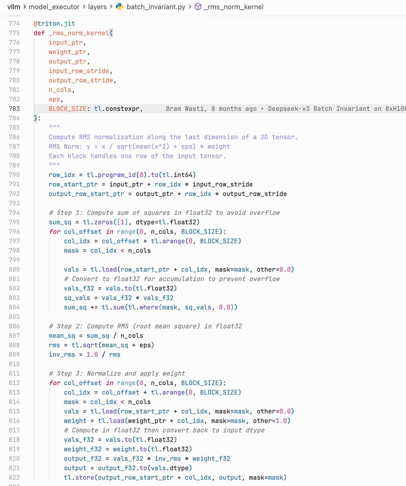
编译场景下 RMSNorm的Batch Invariance
其实这里才最反直觉的地方，上面说了CUDA的实现、Triton的实现，实际上最终默认逻辑还是走了torch.compile自动生成的Triton kernel。
When PyTorch Inductor is used, 'none' is the default; otherwise 'all'.
在 TorchInductor 编译模式下,vLLM 的 CustomOp 默认禁用(custom_ops 在 Inductor 后端下默认为 none),RMSNorm 因此不走自定义 CUDA/Triton 实现,而是分发到 forward_native,再经ir.ops.rms_norm / fused_add_rms_norm 的 native provider(编译态优先级为 ["native"])。该纯 PyTorch 参考实现由 TorchDynamo 捕获为 FX 图,Inductor对其中的类型转换、平方、按最后一维求均值(归约)与权重乘法执行算子融合,生成单个 Triton 归约 kernel。
RMSNorm 的输入形状为 [num_tokens, hidden_size],归约沿最后一维(hidden_size,模型的编译期静态常量)进行;num_tokens 是并行维,各行相互独立、不参与彼此的归约。因此 num_tokens的取值只决定并行行数,不参与单行内对 hidden_size 的浮点累加顺序。这是该算子在编译态可保持批不变的结构前提。
forward_native — used by default during compilation; batch-invariant dispatching is absent here, so it is silently skipped. Instead we relied on Inductor to generate a batch-invariant Triton kernel. Issue #40628 RFC vLLM IR: Batch Invariance Dispatching in vLLM IR
@register_op
def rms_norm(
x: Tensor, weight: Tensor | None, epsilon: float, variance_size: int | None = None
) -> Tensor:
"""Weighted root-mean-square layer normalization"""
orig_dtype = x.dtype
x = x.to(torch.float32)
x_var = x if variance_size is None else x[..., :variance_size]
variance = x_var.pow(2).mean(dim=-1, keepdim=True)
x = x * torch.rsqrt(variance + epsilon)
if weight is not None:
x = x.to(weight.dtype) * weight
return x.to(orig_dtype)
编译器自动生成的 Triton Kernel，它是如何维持 Batch Invariance 的？这里的核心问题在于编译器的 Split-Reduction（拆分规约） 优化。类似于 GEMM 中的 Split-K，当规约维度（hidden_size）较长，且并行维度（Batch Size，即 num_tokens）极小时，为避免 GPU 的 SM 空载，Inductor 会触发多段拆分逻辑：将同一行的 hidden_size 强行切片，分发给多个 Thread Block 并发计算局部和，最终再执行全局规约合并。
而是否对归约做多段拆分(split-reduction)由 Reduction.num_splits 决定,其中:
# torch/_inductor/ir.py::num_splits
reduction_numel_hint = sizevars.symbolic_hint(reduction_numel) # hidden_size
numel_hint = sizevars.symbolic_hint(sympy_product(ranges)) # num_tokens
if not (_is_static(reduction_numel_hint) and _is_static(numel_hint)):
return ReductionHint.DEFAULT, 1 # 仅对 unbacked symint 成立
symbolic_hint 的行为是:对 backed 符号用代表值(backed_var_to_val)替换为具体整数,对 unbacked 符号保留符号。
vLLM 默认使用 torch._dynamo.mark_dynamic(backed)。因此num_tokens 经 symbolic_hint被替换为其代表值,_is_static(numel_hint)为真,上述提前返回不触发,后续启发式正常执行,可能选出 split > 1。该提前返回(即所谓保守路径)仅在使用 mark_unbacked 时才生效。
@support_torch_compile(
# mark_unbacked_dims={"input_ids": 0},
dynamic_arg_dims={
"input_ids": {0: "b"},
"positions": {0: "b"},
"intermediate_tensors": {0: "b"},
"inputs_embeds": {0: "b"},
},
)
def mark_dynamic(arg, dim_shape_pairs):
if ds_type == DynamicShapesType.UNBACKED:
...
torch._dynamo.decorators.mark_unbacked(arg, dim, hint_override=..., shape_id=shape_id)
...
else:
torch._dynamo.mark_dynamic(arg, dims) # 默认 BACKED 路径
进入启发式后,reduction_split_factor 的判定为:
# torch/_inductor/choices.py:reduction_split_factor
if numel_hint >= 2 * num_sm: # 大 batch → 不 split
return 1
if reduction_numel_hint <= 8192: # hidden ≤ 8192 → 不 split(对任意 num_tokens 都成立)
return 1
# 仅 hidden > 8192 且 numel_hint < 2*num_sm 才 split>1,且 split 值随 numel_hint 变
由于当今大部分开源模型都满足hidden_size ≤ 8192，reduction_split_factor 对该条件恒返回 1,与 num_tokens 代表值无关,归约保持单程(single-pass)。同时vLLM借助TorchCompileWithNoGuardsWrapper阻止特化与重编译，compile_ranges_endpoints 默认为 None,get_compile_ranges() 返回空,即对任意 batch size 只编译一份图。即便配置多个 compile_ranges 生成多张图,对 hidden_size ≤ 8192,上述条件使 split 恒为 1，从而归约结构一致，保持 Batch Invariance。
特别注意：在hidden size大于8192时，显式配置 compile_ranges=[512] 或 compile_sizes=[N]。此时编译器将针对特定range/尺寸 N 独立生成静态形状图，numel_hint与hidden_size的乘积导致启发式阈值导致split可能发生变化，从而Inductor Split-Reduction 拆分归约发生变化，导致该静态图与动态图的累加树形态产生结构性突变，破坏算子级别的数值一致性。
compiled = torch.compile(fn, dynamic=False) # 每个 shape 各编一份
compiled = torch.compile(fn, dynamic=True) # 一份图通吃所有 shape
compiled = torch.compile(fn, dynamic=None) # 默认:先特化,shape 一变就转成动态
TorchCompileWithNoGuardsWrapper： 从JIT到AOT
在 PyTorch 2.11 的 JIT（即时编译）机制下，计算图的运行强依赖 Shape Guard 来进行合法性检查。但在 LLM 推理场景中，Batch Size 的频繁波动易触碰边界条件（例如s0 >= 2的 Guard 验证失败），从而触发 JIT 引擎的在线重编译（Recompilation），导致端到端延迟出现明显的毛刺。
为了彻底消除 JIT 带来的性能隐患，vLLM 引入了 TorchCompileWithNoGuardsWrapper 结合 Piecewise Backend，实现了纯 AOT（提前编译）派发。在预热阶段，系统会针对不同的张量形状区间提前生成多张预编译图。进入运行时后，该 Wrapper 会主动拦截并丢弃底层所有的 Dynamo Guard 验证，由 vLLM 框架层根据输入形状，以纯静态的方式直接路由到对应的预编译图上。因此，这一机制本质上是由 vLLM 统筹调度的预编译图派发（Dispatch）系统，而非简单地让torch.compile去维护单张动态图。
在这种分段编译机制下，具体算子的代码生成（Codegen）逻辑需视配置而定。以 RMSNorm 为例，当 hidden_size <= 8192 时，其 reduction_split_factor 通常为 1，这使得单行归约（Inner Reduction）能够保持高效的 Single-pass 执行。但需要注意的是：最终系统会切分出多少张图、每张图采用什么代表值（Representative Value），以及不同的图是否会命中相同的 Codegen 策略，都高度依赖于 vLLM 的 Compile Ranges/Sizes 设定、动态 Shape 的类型以及 PyTorch 的具体版本。因此，任何关于底层算子行为的绝对保证，都必须严格限定在明确的软件版本与编译配置环境内。
Attention的Batch Invariance
Attention计算
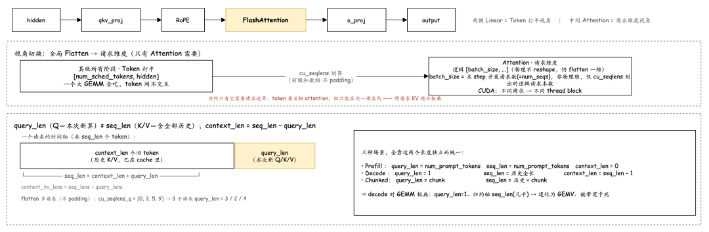
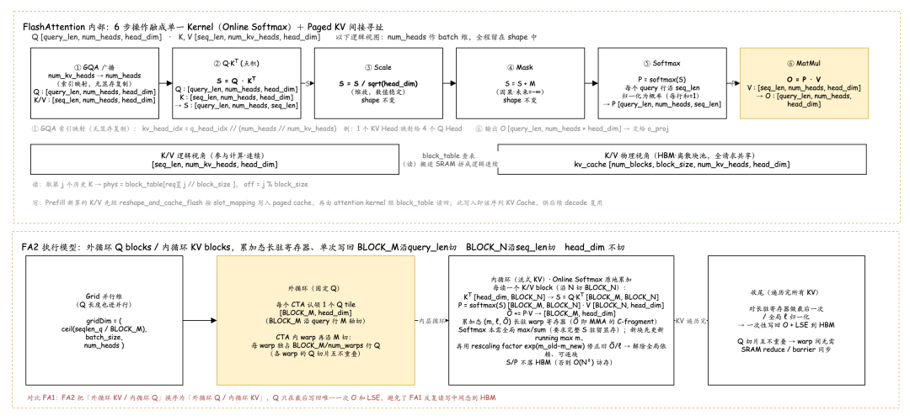
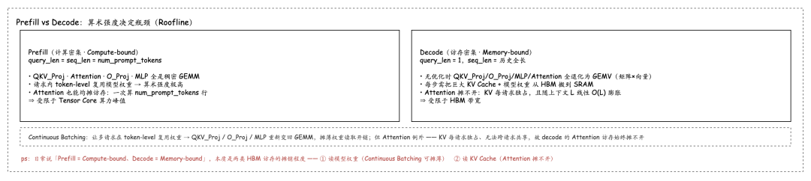
这里就不详细介绍Attention的基本原理了，之前写过一篇文章《AI Infra入门：大模型是如何高效推理的 》，我们直接从FlashAttention实现说起。
| S = Q × KT | [query_lens, num_heads, head_dim]K: [seq_lens, num_kv_heads, head_dim]S: [query_lens, num_heads, seq_lens] | [BLOCK_M, head_dim]K: [BLOCK_N, head_dim]S: [BLOCK_M, BLOCK_N] | |
| S = S / √(d) | |||
| S = S + M | |||
| P = softmax(S) | [query_lens, num_heads, seq_lens] | [BLOCK_M, BLOCK_N] | |
| O = P × V | [query_lens, num_heads, seq_lens]V: [seq_lens, num_kv_heads, head_dim]O: [query_lens, num_heads, head_dim] | [BLOCK_M, BLOCK_N]V: [BLOCK_N, head_dim]O: [BLOCK_M, head_dim] |
Q TIle对应的就是本次一起处理的Q维度Token即[BLOCK_M, head_dim],本质上就是将宏观的Q [query_lens, num_heads, head_dim]沿 M 轴按 BLOCK_M 将query_len切分成query_len / BLOCK_M个 Q tile。 (num_heads也变成并发维度了)
然后每个CTA负责一个Q Tile，沿 K/V 方向做一次融合遍历处理所有的历史KV，同时完成 S=QKT、online softmax、以及 O += PV 三件事。让中间矩阵 S, P 始终活在寄存器中、不写回 HBM——最后只把每个 Q tile 的 O 和 LSE 写出去。
BLOCK_M只是影响多少个Q维度的token并发（即query_len维度），所以完全不应影响浮点加法的顺序；而BLOCK_N是KV维度的token并发（即seq_len维度），是规约轴，会影响浮点加法的顺序。不同的BLOCK_N导致Online Softmax缩放维度不一致，即多个KV token计算一个局部的mnew， 同时BLOCK_N在O = P × V中其实就是GEMM中的BLOCK_K, 会规约树发生变化，但是QK点积没影响，因为QK点积是head_dim维度规约。
FlashAttention中，BLOCK_M 与 BLOCK_N 都是编译期常量,且它们的取值只由 (head_dim, causal/local, dtype, arch) 决定,与batch 与 seqlen无关——它们决定是单个 CTA 内部怎么算最快 (即受每个 SM 固定的寄存器/SMEM 预算约束,head_dim 是把 tile 换算成资源消耗的基本单元),而要跑多少个这样的 CTA由 grid 与 num_splits 负责。因此无论不管 batch 多大、seqlen 多长,tile 都是同一个值,规约顺序在该 kernel 内完全固定,结果逐 bit 确定。真正改变浮点加法顺序的,是切分规约轴(KV 轴)的优化（SplitKV / num_splits）:把 KV 规约轴切给多个 CTA 再由 combine 合并,规约树结构改变。且其自动启发式的输入 total_mblocks = batch_size × num_head_kv × num_m_blocks 正比于 batch,所以 batch 变化会经由 num_splits 破坏 batch 不变性。
chunked prefill
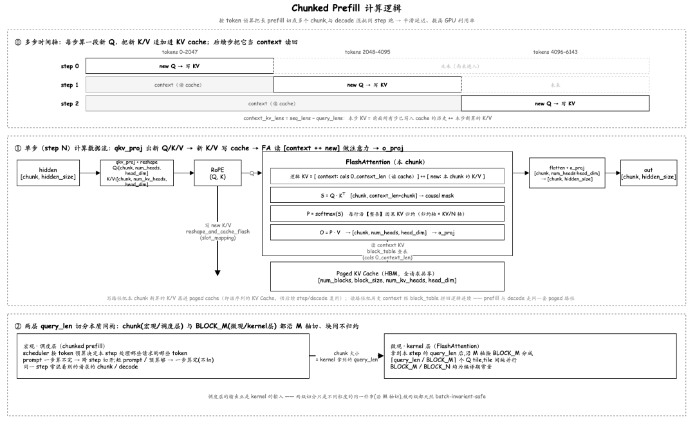
FlashAttention计算时，BLOCK_M是对于query_len微观层面的切分， chunked prefill则可以理解为对query_len的宏观层面上的切分。两者本质相同——都沿 query 轴(M 轴)切、块间互不归约,所以都天然 batch-invariant-safe;但切的是不同层级的query_len。上面已经看到了，对于相同的(head_dim, causal/local, dtype, arch) ，BLOCK_M是确定的，而chunked prefill中query_len的切分是随batch会发生变化的，那这里的切分是否会改变改变浮点加法顺序呢？
chunked prefill是调度层的切分，scheduler 按 token 预算决定这一 step 处理哪些请求的哪些 token;当某请求的 prompt 一次算不完时,它就被跨 step 切开,每 step 喂进 kernel 的 query_len 即该 step 分到的 chunk 大小(prompt短、预算够时一步算完,并不会被切;同一 step 通常还混着别的请求的 chunk / decode)。
BLOCK_M 是 FA kernel 层的切分:kernel 拿到本 step 的 query_len 后,沿 M 轴按 BLOCK_M 分成 query_len / BLOCK_M个 Q tile。
chunked prefill的输出其实就是FA kernel的输入——chunk 大小即 kernel 拿到的 query_len。这个输入不仅影响几个 Q tile,还经 num_m_blocks = ⌈query_len/64⌉ 影响 kernel 要不要 split-KV:chunk 大 → query_len 大 → 判"填满 SM"→ 不切 KV(prefill 常态,BI友好);chunk 退化到 decode 的 1 → 可能触发 split-KV。
之所以query_len切分不会影响浮点加法顺序有两个原因：
query_len维度(M 轴)上，attention计算是：请求内不同 query token 之间的 attention 计算是并行的、彼此不存在归约，计算的query_len的每个token 与 seq_len 中的 K/V token 的关系； 切 query_len 只决定哪些 token 这一步一起算, 无论怎么切,它对应的 n_block 切分与累加顺序逐块对齐、完全一致。
causal mask 保证每个 token 只依赖它自己和它之前的 token。 K/V 是逐 token 独立生成的(每个 token 的 key/value 只由它自己的输入经权重投影得到,跨 token 之间没有计算依赖);而 causal mask 在 attention 这一步把每个 token的归约范围控制在它自己及之前的所有 token。因此Attention最终的输出取决于query 向量对它自己及之前所有 token的 K/V 做 softmax 加权和（归约轴是 KV 方向），与 query_len无关；chunk 怎么切,单个 token 的数学结果不变。
FlashDecoding - split-kv
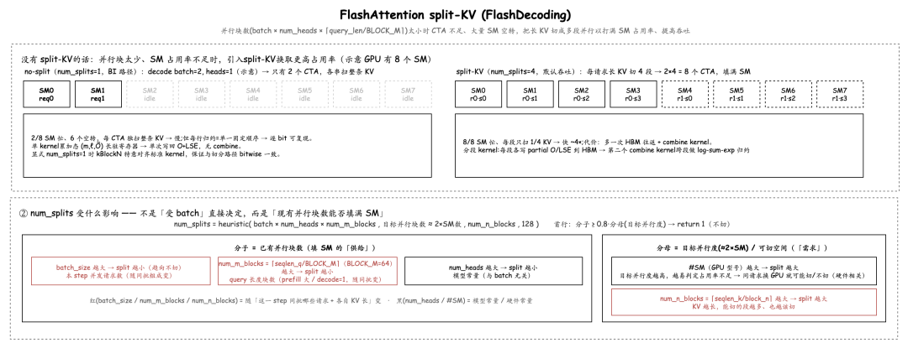
前面提到了chunked prefill 沿 query 轴（M 轴）切，块间不归约，天然batch invariance。但到了 decode 阶段，情况正好反过来：每步 query_len 退化为 1（M=1），而 seq_len (KV） 却可能极长。如果让一个 Q tile 独占一个 CTA、沿 KV 串行计算，那么 batch 很小时就只能拉起几个 CTA，绝大多数 SM 空转——这里本质上跟GEMM中的Split-K要解决的问题是一致的，只不过这里被切的规约轴是 KV。
FlashDecoding 的做法就是 split-KV：根据 (batch, heads, seq_kv, num_sms) 动态的，把一个 query 的 KV 区间切成num_splits段，交给多个 CTA 并行，各自算出一段的局部 O 与局部 LSE（log-sum-exp），最后由一个 combine/reduce 步骤按 LSE 把这些局部结果合并成最终输出。这一步在数学上等价于 online softmax 的跨段合并。
问题就出在切几段上：num_splits是根据 batch/seqlen 动态决定的，目标是填满 SM。num_splits一变，LSE 合并时的规约拓扑就变，浮点加法顺序随之改变——于是又丢了 batch invariance。同样，这跟Split-K的逻辑一致：固定段数时 combine 是有序的、run-to-run 确定；可一旦 batch 让段数发生变化，结果照样会变。
vLLM中Attention的Batch Invariance支持
这里实现Batch Invarianc逻辑也很直接，强制不拆 KV，即 num_splits = 1。vLLM 在 FlashAttention 后端里，只要开了 VLLM_BATCH_INVARIANT 就把 split写死为1：
# vllm/v1/attention/backends/flash_attn.py
if envs.VLLM_BATCH_INVARIANT:
max_num_splits = 1
...
# 各处调用 flash_attn 时统一：
num_splits=1 if envs.VLLM_BATCH_INVARIANT else max_num_splits
MLA 的 prefill/decode 路径同理（num_splits = 1）。代价是 decode 小 batch 下 SM 利用率会下降，这是“确定性 ↔ 吞吐”间 的trade off在 Attention 侧的又一次体现：和 GEMM 一样，我们牺牲了一部分并行度，换回了浮点加法顺序的稳定。
NCCL的Batch Invariance
前面我们讨论的都是单卡内部微观算子的调度导致的结果偏差。随着现代大模型模型参数量的爆炸，当单卡显存无法容纳整个模型时，系统通常需要引入模型并行。其中，Tensor Parallelism (TP)是一个常用的方案：将单个矩阵乘法沿特定维度切分到多张 GPU 上。从这个角度看，TP 可以被视为一种跨设备的高维 Tiling，只不过 Tile 之间不再共享同一块片上存储，而是通过分布式通信交换中间结果。
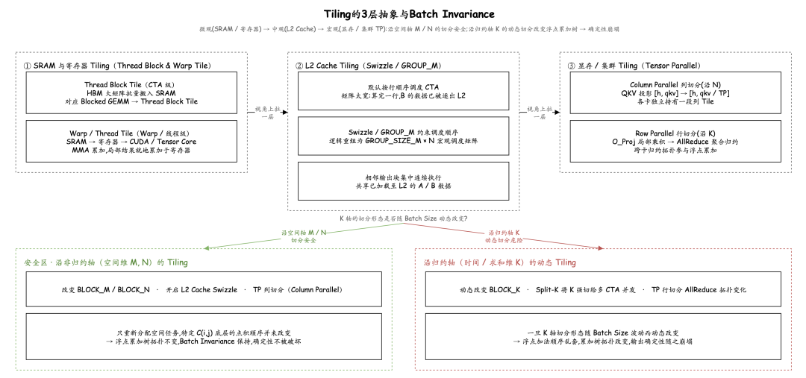
分布式计算中，计算往往不是瓶颈，跨设备通信（如 All-Reduce）才是拖慢整体吞吐量的元凶。为了减少通信，我们需要一种矩阵切分策略，使得多个连续的线性层在计算过程中尽可能保持独立，直到最后一刻才进行数据同步。这就是在 MLP或Attention 中，通常会采用“列并行 → 行并行”的组合策略：
Column Parallelism (列切分)： Fused QKV 和 FFN 的 Fused Gate/Up 都是列切分。例如 QKV 的权重维度在单卡上会变成
[hidden_size, qkv_proj_size / TP_size]，输出也相应变成[num_sched_tokens, qkv_proj_size / TP_size]。Row Parallelism (行切分)： O_Proj 和 FFN 的 Down_Proj 是行切分。权重变为
[hidden_size / TP_size, hidden_size]。计算完成后[num_sched_tokens, hidden_size]，通过AllReduce算子来聚合跨卡结果。
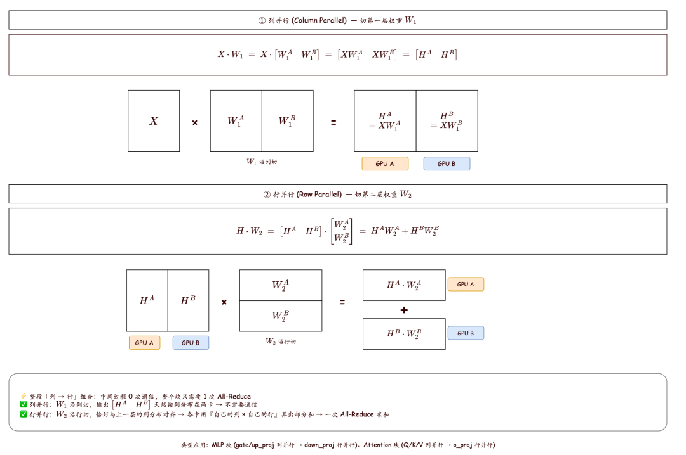
在不考虑 Sequence Parallel、Late All-Reduce 和通信融合的经典的 Dense Transformer TP 实现中，一个 Transformer Block 通常包含两次此类同步：Attention 的 O_Proj 之后一次，MLP 的 Down_Proj 之后一次。每个 Row-Parallel Linear 本身只需要一次 All-Reduce。具体而言，在行并行线性层计算结束后，每张卡都会产生一个维度为 [num_sched_tokens, hidden_size] 的局部偏和（Partial Sum）张量。All-Reduce (Sum) 操作将跨卡对齐规约这些张量，操作完成后，集群中的每张卡都将拥有一份完全一致的、全局求和后的完整输出张量（维度保持 [num_sched_tokens, hidden_size] 不变），从而使各卡可以无通信地独立执行后续的残差连接（Residual Add）与归一化（LayerNorm）。那么问题来了，这里的多卡加法的顺序是恒定的吗？
答案是：在默认情况下，不一定。这是由于NCCL库在吞吐和延迟间的trade-off。
对于固定消息大小，它通常是稳定的；但跨不同 Batch Size，NCCL 并不保证采用相同的规约算法、通道数和数据切分方式，因此规约顺序不一定保持不变。
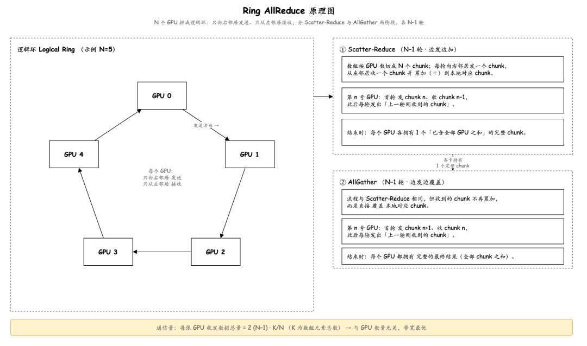
业界经典的 Ring All-Reduce（ Reduce-Scatter + All-Gather ）的优势是高吞吐，但是同时延迟会随节点数线形增长。从逻辑依赖上看，Ring All-Reduce 需要 (N-1) 个 Reduce-Scatter step 和 (N-1) 个 All-Gather step。NCCL 会通过 chunk pipeline 和 Multi-Channel 将不同数据块重叠执行，但单个 chunk 的依赖链长度仍随 rank 数近似线性增长。因此在小消息、低 Batch 的 latency-bound 场景下，Ring 很难充分发挥其带宽优势。
值得一提的是，Baidu Silicon Valley AI Lab 较早将 HPC 领域的 Ring All-Reduce 系统性地应用并推广到深度学习分布式训练中，使这一算法成为数据并行训练中的经典方案。NCCL 也长期将 Ring 作为核心算法之一。
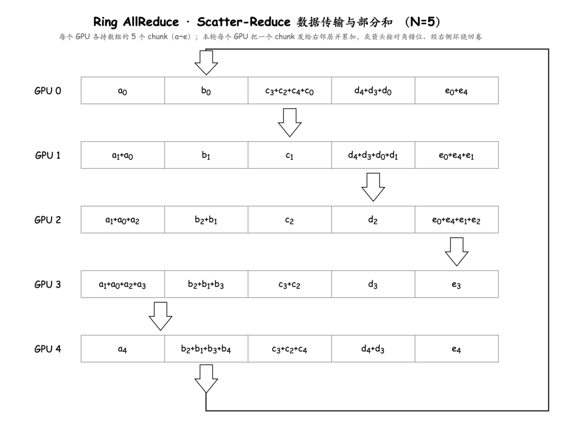
为了在不同负载下都能压榨出极限性能，NCCL 在 communicator 初始化阶段根据硬件拓扑构造多种候选通信图，并建立 latency/bandwidth 性能模型；在每次 collective入队时，再根据消息大小、rank 数、节点数和可用传输路径选择预计代价最低的算法、协议及 channel 配置。
上面已经提到，在 LLM 推理的动态组批（Dynamic Batching）过程中，All-Reduce 的 Message Size 是按 [num_tokens, hidden_size] 计算的。这意味着，Batch Size 的波动，会直接导致单次通信负载的大小发生变化。当通信载荷跨越某个阈值时，NCCL 会在底层切换规约拓扑：
Ring 算法： 采用环形传递，加法顺序是线性的。例如 GPU0 → GPU1 → GPU2 → GPU3。
Tree / Double Binary Tree 算法： 采用树状层级规约，加法顺序是分治的。例如 (GPU0 + GPU1) + (GPU2 + GPU3)。
但这还不是全部。除了宏观算法的切换，NCCL在微观执行链路上的多通道并发（Multi-Channel）切分机制也会导致Batch Variance。现代 GPU 节点内通常具有多条物理互联链路（如多条 NVLink 链路）。为了压榨双向物理带宽，NCCL 引入了 Channel的抽象。NCCL 的 Channel 是一条独立的逻辑通信流水线。在 GPU kernel 中，每个活跃 Channel 通常由一个 CUDA Thread Block 负责；每个 Channel 拥有自己的 Ring/Tree 连接关系和chunk 流水线。它不一定与某一条物理 NVLink 一一对应，但多个 Channel 可以帮助并行利用多条可用链路。
当触发一个较大的 All-Reduce 任务时，NCCL 会将总数据块进行切片，分发给多个 Channel 并发执行规约。这一机制引发 Batch Variance 的原因在于以下两点：
拓扑异构：
为了实现双向链路吞吐的最大化，NCCL 会为不同的 Channel 分配结构或方向完全不同的规约拓扑。NCCL 可以为不同 Channel 构造不同的 Ring 或 Tree。
例如，在某些拓扑上，分配 Channel 0 执行正向 Ring，加法顺序为 (((GPU0 + GPU1) + GPU2) + GPU3)；同时分配 Channel 1 执行逆向 Ring，加法顺序则变为 (((GPU0 + GPU3) + GPU2) + GPU1)。
数据切分边界的动态滑动：
在 LLM 推理的动态组批中，Batch Size 的波动会导致 All-Reduce 的总 Message Size 发生改变。一旦总数据量变化，NCCL 内部的启发式策略就会重新计算分配给各个 Channel 的数据切分边界。这就导致了：原本在 Batch Size = N 时被分配到 Channel 0 负责规约的某一段内存数据，在 Batch Size = N+1 时，可能因为切分边界的微调被划定到了 Channel 1 的负责区域。
# vllm/config/parallel.py
if envs.VLLM_BATCH_INVARIANT:
self.disable_custom_all_reduce = True
vLLM 的 Custom All-Reduce 是节点内 TP 的低延迟性能路径，但它内部同样包含随消息大小切换的 1-stage/2-stage 算法，因此不能被视为严格 Batch Invariant。开启VLLM_BATCH_INVARIANT=1 后，vLLM 首先禁用 Custom All-Reduce 和 symmetric-memory 路径，再将 NCCL All-Reduce 固定到 Tree + Simple，并将 Channel 数锁定为 1，同时关闭 NVLS、CollNet 等可能引入其他规约拓扑的通信路径。
vLLM 的 Custom All-Reduce 是默认性能路径之一，但它并不是当前严格 Batch Invariance 模式的解决方案。它内部也包含 1-stage 和 2-stage 两套算法：TP4 下通常以 512 KiB 为切换点，TP6/TP8 下通常以256 KiB 为切换点。1-stage 会在每个 rank 上按照固定指针顺序完整规约所有元素；2-stage 则先由不同 rank 负责不同输出分区，再执行 All-Gather，而且每个分区的累加顺序以其 owner rank 为起点循环展开。当消息大小改变了算法选择或分区 owner 时，同一逻辑元素可能经历不同的累加顺序。因此 vLLM 的Batch Invariant 模式会直接禁用Custom All-Reduce。
Custom All-Reduce是vLLM针对节点内 Tensor Parallel 高频、小中消息 All-Reduce 所增加的一条低延迟快路径。将单节点 TP All-Reduce 简化成一个直接访问所有 peer GPU 显存的 CUDA kernel。通过 CUDA IPC 提前获得 peer pointer，使用轻量级 GPU barrier、128-bit 向量化访存以及1-stage/2-stage 专用算法，减少 NCCL 通用路径在小中型消息上的固定延迟。
def override_envs_for_invariance():
os.environ["VLLM_ALLREDUCE_USE_SYMM_MEM"] = "0" # 关闭 NCCL/Torch symmetric-memory 快路径
os.environ["CUBLAS_WORKSPACE_CONFIG"] = ":4096:8"
# NCCL determinism settings
os.environ["NCCL_LAUNCH_MODE"] = "GROUP"
os.environ["NCCL_COLLNET_ENABLE"] = "0"
os.environ["NCCL_NVLS_ENABLE"] = "0"
os.environ["NCCL_P2P_NET_DISABLE"] = "1"
os.environ["NCCL_MIN_NCHANNELS"] = "1"
os.environ["NCCL_MAX_NCHANNELS"] = "1" # 强制单通道通讯
os.environ["NCCL_PROTO"] = "Simple"
os.environ["NCCL_ALGO"] = "allreduce:tree" # 强制使用tree算法 + simple协议
os.environ["NCCL_NTHREADS"] = "1"
os.environ["NCCL_SOCKET_NTHREADS"] = "1"
# torch.compile settings
os.environ["VLLM_USE_AOT_COMPILE"] = "0"
VLLM_ALLREDUCE_USE_SYMM_MEM=0 关闭的是 vLLM 基于 PyTorch Symmetric Memory 实现的 multimem/two-shot All-Reduce 后端，避免请求根据硬件能力进入另一套规约 kernel。
NCCL_COLLNET_ENABLE=0 禁止NCCL 使用CollNetDirect/CollNetChain 等网络侧collective-offload 算法；NCCL_NVLS_ENABLE=0 则禁止 Hopper/Blackwell NVSwitch 系统使用NVLink SHARP multicast/reduction 路径。二者都是为了将候选规约拓扑收缩到普通 NCCL Tree。即不允许网卡/网络 collective plugin/NVSwitch 参与规约，避免 All-Reduce 走 CollNet 或网络侧聚合路径。
这与单卡算子的解决方式本质一致：GEMM 需要固定 Split-K 和 K 轴分块，Attention 需要固定 Split-KV，而分布式 All-Reduce 则需要固定跨 rank 的规约图、协议和数据切分方式。它们解决的都是同一个问题——阻止系统根据 Batch Shape 动态改变 Reduction Topology。
总结
以上，大模型在推理过程中导致Batch Variance的根本原因，在于底层算子为最大化硬件资源利用率，动态调整了规约轴（如 GEMM 中的 Split-K 或 Attention 中的 KV 轴）的切分策略，进而改变了浮点数累加树的拓扑结构。若要实Batch Invariance，就必须在算子调度层面约束此类动态切分行为。
PS：受限于篇幅同时保证文章质量，本文还有2个地方没有展开讲：一个是 MoE架构下特有的 Batch Invariance 问题；另一个是 NCCL 更深层的通信拓扑与底层机制。这些内容后续再单开一篇填坑。
然而，工程实现却复杂的多。想要做到知其所以然，我们需要向下深入 GPU 物理微架构与算子执行范式（Triton/CUDA），向上解析框架层的计算图编译逻辑（Inductor/IR）。所谓的 AI Infra，本质上是在这多层技术抽象中，寻求系统性能与数学等价性之间的最优 Trade-off。
PS: 关于torch.compile/cuda graph/vLLM IR部分严重拖慢了笔者的节奏，下一篇可能会这是这个方向吧。
PS: 本文是对于thinking machines的博客《Defeating Nondeterminism in LLM Inference》和vLLM(v0.25.1)中Batch invariance实现的学习笔记。值得一提的是，在阅读代码的过程中还顺手帮vLLM修改了bug。[Fix batch invariance in RMSNorm kernels by pinning block size]
Reference
Defeating Nondeterminism in LLM Inference
RFC vLLM IR: Batch Invariance Dispatching in vLLM IR
Perf Optimize batch invariant with fused rms norm, 2.1% E2E latency improvement
Kernel Optimize rms_norm kernel
BUG Batch invariance breaks with torch.compile and/or CUDA graphs on SM<90
Bugfix Fix batch invariance in RMSNorm kernels by pinning block size
Bringing HPC Techniques to Deep Learning